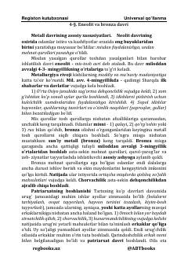

OT6-9-sinf o'quvchilari uchun O'zbekiston tarixi bo'yicha qisqacha universal qo'llanma.
Ushbu qo'llanma 6-9-sinf o'quvchilari uchun mo'ljallangan bo'lib, O'zbekiston tarixining qadimgi davrlari, eneolit, bronza va temir davrlari hamda o'rta asrlardagi sivilizatsiyalar haqida qisqacha va tushunarli ma'lumotlarni beradi. Unda o'lka tarixi, mashhur allomalar va tarixiy jarayonlar yoritilgan.